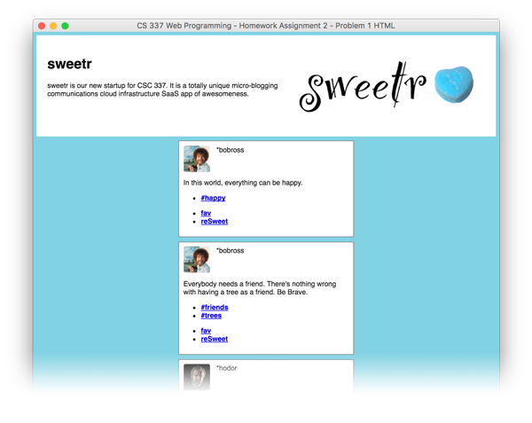

CSS is the primary means we use today to make our HTML documents look the way we want, or more often, the way the designers we'll work with want the pages to look.
This assignment will focus on transforming the look of some existing HTML, particularly focusing on how to target specific HTML elements, while avoiding others.
Instructions for all problems
There will be additional instructions numbered like this for the individual problems. Be sure to follow all the instructions!
The first step with CSS is to figure out how to target the elements you're interested in. In this problem you will have to target various elements and add a CSS declaration to them.
There are two files you will be using for this problem: problem1.html and problem1.css. You are not allowed to modify problem1.html in any way. All changes will be made only in problem1.css. You will of course need to look at the contents of problem1.html, but you may not edit it at all.
Here is what problem1.html looks like in a browser before modifying the CSS file:
Part a)
Add the following rule to problem1.css such that all the text on the page is affected, and the background color is changed. You will need to change ??? to be the appropriate selector. We're changing the font-face from the default serif font to a sans-serif font.
Add the following rule to problem1.css so that the header Logo image is floated to the right side of the page. You will need to change ??? to be the appropriate selector.
??? {
float: right;
}
Part d)
Add the following rule to problem1.css so that each 'sweet' block is formatted better. You will need to change ??? to be the appropriate selector.
Add the following rule to problem1.css so that all the anchor elements are bold. You will need to change ??? to be the appropriate selector.
??? {
font-weight: bold;
}
Part f)
Add the following rule to problem1.css to remove the default padding around the figures in the 'sweets'. You will need to change ??? to be the appropriate selector.
??? {
margin: 0;
padding: 0;
}
Part g)
Add the following rule to problem1.css so that the avatar images for each sweet is a bit smaller with rounded edges. You will need to change ??? to be the appropriate selector.
We don't want the actual text of the sweet to be wrapped next to the avatar image, it should be below it.
Add the following rule to problem1.css so the main text of the sweet is clear of all nearby floated elements. You will need to change ??? to be the appropriate selector.
??? {
clear: both;
}

Part i)
Add the following rule to problem1.css so that the hashtags on each sweet appear on a single line, and get rid of the bullet point. You will need to change ??? to be the appropriate selector.
??? {
display: inline;
padding: 0 10px;
}
Part j)
Add the following rule to problem1.css so that all the links inside footer elements are smaller. You will need to change ??? to be the appropriate selector.
??? {
font-size: 0.6em;
}
Part k)
Add the following rule to problem1.css so that the footer links are aligned to the right side of their container. You will need to change ??? to be the appropriate selector.
Some of the links on this page target another window.
Add the following rule to problem1.css so that the following footer links at the very bottom of the page are not underlined. You will need to change ??? to be the appropriate selector.
??? {
text-decoration: none;
}
Problem 2 - 40 points
Next we will flip it around. For this problem, problem2.css has a series of rules already present. You will need to modify problem2.html so that it matches the following picture. In this case you may not modify the CSS file at all, only modify the HTML file to match the following image. You will need to add several HTML elements to the document in order to have it match.
Note that this design will not scale very well if your browser window gets too wide or too narrow. So try adjusting your browser window width to match the rough width of the image for best results.
Problem 3 - 10 points
For this problem, you will back to updating a CSS file, problem3.css. You will make problem3.html look the same as the image below, by only adding CSS rules to problem3.css
Problem 4 - 10 points
This problem deals with CSS precedent and specificity. The file problem4.html has two CSS files linked to it. You are only allowed to modify problem4.css and may not change, add, or remove rules to problem4-x.css. You may also not edit problem4.html.
Here's what the page looks like to begin with, with only the rules from problem4-x.css applied:
Create as many new CSS rules in problem4.css as are required to accomplish the following:
Set the text color of the elements under the "Costs" section to 'orange'.
Set the background color of the top level list items to 'lightgray'.
Fix the bottom margins of the children of section 2 so that they're right below the item above it. Leave the space between items 1 and 2 the same.
Fix the text size of sections i and ii to only be '1em'.
Remember you may not alter problem4.css or problem4.html for this problem.
Homework Submission
You should create a folder holding your files, and zip it up for submission. Name your folder and zip file something descriptive like Mark-Fischer-HW2.zip or something. Please make a folder with your files in it, and zip up the folder. Do not select all the files and zip them up.
File List
problem1.css
problem2.html
problem3.css
problem4.css
Homeworks Zip files will be submitted to D2L, in the "Assignment 2" dropbox.